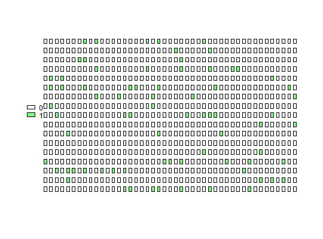
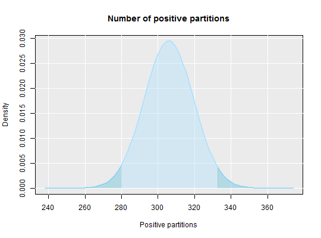

The dpcR package is a collection of functions for a digital Polymerase Chain Reaction (dPCR) analysis. dPCR comprises methods to quantify nucleic acids, copy number variations (CNV), homo- and heterozygosity, as well as rare mutations (including single nucleotide polymorphisms (SNP)). The chemical basis of dPCR is similar to conventional PCR but the reaction-mix is divided into hundredths to thousands of small compartments with parallel amplifications reactions. The analysis is based on counting the number of positive compartments and relating it to the total number of compartments by means of Poission statistics which enables an absolute quantification.
The package includes plot functions, summary functions, data sets and simulations for dPCR and customizable GUI for droplet digital PCRs and array-based digital PCRs. We aim to include all statistical approaches published in peer-review literature and additional selected sources of expertise currently available. We intent to make these methods available to the scientific community in an open and cross-platform environment. Using the naming convention derived from the MIQE Guidelines for digital PCR, we hope to become a reference to a unified nomenclature in dpcR.
The package is primarily targeted at researchers who wish to use it with an existing technology or during the development of novel digital PCR systems. In addition the dpcR package provides interactive tools that can be used to better learn about digital PCR concepts and data interpretation.
Huggett J, Foy CA, Benes V, Emslie K, Garson JA, Haynes R, Hellemans J, Kubista M, Mueller RD, Nolan T, Pfaffl MW, Shipley GL, Vandesompele J, Wittwer CT, Bustin SA The Digital MIQE Guidelines: Minimum Information for Publication of Quantitative Digital PCR Experiments Clinical Chemistry, 2013. 59(6): p.892-902.
Vogelstein B, Kinzler KW, Digital PCR. PNAS, 1999. 96(16): p. 9236-9241.
qpcR.news, http://michbur.github.io/pcRuniveRsum/.
adpcr <- sim_adpcr(m = 400, n = 765, times = 20, pos_sums = FALSE, n_panels = 1) plot_panel(adpcr, col = "green")#> method k n mean lower upper #> 1 wilson 306 765 306 279.8886 332.8759